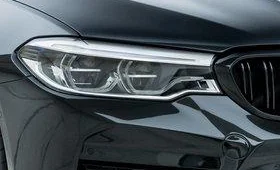
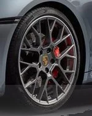
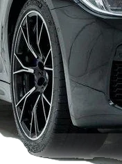
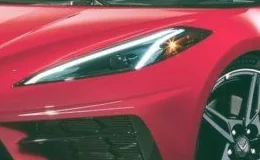
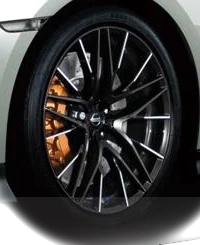
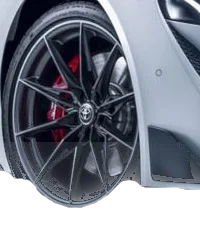

Issue 01The Performance Collection
Five cars,
considered.
A long look at five modern performance cars: what each one is for, how it is built, and why it earns your attention.
Enter the collectionManifesto
A fast car is easy to describe. A good one takes longer.
AETHER GT is a magazine-length study of five cars that share very little on paper. One keeps a twin-turbo V8 under a four-door body. One hangs a flat-six behind the rear axle. One carries a name from 1978, and one moved its V8 behind the driver after seven generations of keeping it in front.
What they share is conviction. Each answers a single question with unusual clarity, and we have tried to describe each answer plainly: what the car is, how it is put together, and what it asks of the person driving it. No superlatives we cannot support. No numbers without their qualifications.


In this issue
Five cars, five answers
-
01
BMW
M5 F90 Competition
Four doors. Twin-turbo V8. Uncompromising. Explore -
02
Porsche
911 Carrera 4S
The rear-engined icon, with all-wheel-drive grip. Explore -
03
Nissan
GT-R R35
The all-wheel-drive giant-killer. Explore -
04
Toyota
GR Supra MK5
Rear-drive precision, reborn. Explore -
05
Chevrolet
Corvette C8
Mid-engine, at last. Explore
Five cars, one standard
Different layouts. The same care.
Lead story · 01
The saloon with the supercar’s pulse.
The M5 Competition asks a question most performance cars avoid: what if you did not have to choose? There are four doors and a proper boot. There is also a 4.4-litre twin-turbo V8 making about 625 PS, depending on market.
It is the one car in this issue that can take a family to dinner and then remind everyone at the table why they like cars. It is also the only one with its own interactive 3D page.

Four doors and a supercar’s pulse is not a compromise. It is a decision.
How we look at a car
Three principles
-
01
Proportion
Before the figures, the shape. A car is understood from across a car park long before it is understood from a specification sheet. We begin with where the engine sits, how long the wheelbase is and how low the roofline falls, because those decisions explain nearly everything that follows.
-

02Restraint
Power is the easiest thing to advertise and the least interesting thing to know. We give the number once, mark it where it varies by market or model year, and spend the rest of the page on what it is attached to.
-


03Use
These are cars to be driven, not only admired. Each page asks what the car is like on an ordinary Tuesday as well as on your favourite road, because a car worth owning has to be good at both.
Side by side
Five layouts, one scale
| Car | Engine | Position | Length |
|---|---|---|---|
| BMW M5 F90 | 4.4 L twin-turbo V8 | Front | 4,966 mm |
| Porsche 911 Carrera 4S | 3.0 L twin-turbo flat-six | Rear | 4,519 mm |
| Nissan GT-R R35 | 3.8 L twin-turbo V6 | Front | 4,710 mm |
| Toyota GR Supra MK5 | 3.0 L turbo inline-six | Front | 4,379 mm |
| Chevrolet Corvette C8 | 6.2 L naturally aspirated V8 | Mid | 4,630 mm |
Figures are manufacturer-published values for the generation named, rounded, and are repeated from each car’s own page, where the specifications carry their qualifications. Bars share one scale (5,000 mm is the full bar) and are a dimension chart, not a drawing of a car.
Portfolio
The collection, in frame
Image credits
The five car photographs on this page are provisional. Their photographers, sources and licences have not yet been verified, and they will be replaced with licensed images, each credited below.
- BMW M5 F90 CompetitionPhotographer: not yet recordedLicence: not yet verified
- Porsche 911 Carrera 4SPhotographer: not yet recordedLicence: not yet verified
- Nissan GT-R R35Photographer: not yet recordedLicence: not yet verified
- Toyota GR Supra MK5Photographer: not yet recordedLicence: not yet verified
- Chevrolet Corvette C8Photographer: not yet recordedLicence: not yet verified
Cut-outs, crops and colour grading on this page were made from those photographs. 3D model credits are in the footer.